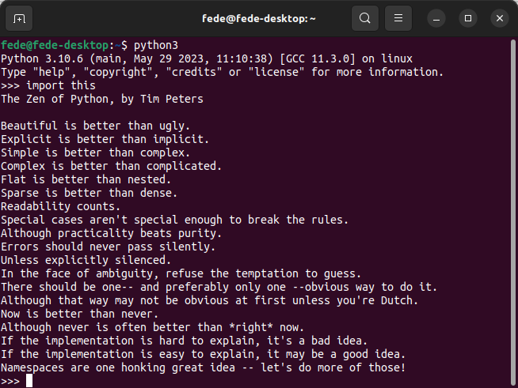

Introducción a Python¶
¿Que es Python y de donde viene?¶
Una breve introducción a cosas de Python que nos pueden ayudar con la guía de MicroPython. Al final se trata el asunto de los permisos en Linux, que aunque sea un poco "off topic" puede resultar útil.
Creador de Python¶
Python es un lenguaje de programación interpretado (no hay que compilar los programas) cuya filosofía hace hincapié en una sintaxis que favorezca un código legible.
Python fue creado a finales de los ochenta, por el holandés Guido van Rossum en el Centro para las Matemáticas y la Informática (CWI, Centrum Wiskunde & Informatica), en los Países Bajos.
El nombre del lenguaje proviene de la afición de su creador por los humoristas británicos Monty Python y no de la serpiente del mismo nombre. Aunque se suele usar un símbolo con una serpiente pitón para representarlo, de ahí la normal confusión.
Se trata de un lenguaje de programación multiparadigma o que soporta más de un paradigma de programación, representando un paradigma un enfoque particular o filosofía para la construcción del software. Python soporta:
- Orientación a objetos. En la programación orientada a objetos (OOP) los objetos manipulan los datos de entrada para la obtención de datos de salida específicos, donde cada objeto ofrece una funcionalidad especial. Los objetos permiten la agrupación en librerías y usualmente permiten al usuario la creación de sus propias librerías. Se basa en técnicas de herencia, cohesión, abstracción, polimorfismo, acoplamiento y encapsulamiento.
- Programación imperativa. Es la forma natural de programar un ordenador, es el estilo de programación que se utiliza en el ensamblador y el más cercano a la máquina. Sigue la arquitectura arquitectura clásica de Von Newmann con una memoria donde se almacenan los datos y el programa y una unidad de control que ejecuta las instrucciones del programa, conocida cómo contador del programa.
- Programación funcional. Es un estilo de programación cuyo método básico de computación es la aplicación de funciones a sus argumentos.
Filosofía Python¶
Es muy parecida a la filosofía de Unix. El código que sigue los principios de Python de legibilidad y transparencia se dice que es "pythonic". Por el contrario, el código opaco u ofuscado es bautizado como "unpythonic". Los puntos que describen su filosofia son:
- Bello es mejor que feo.
- Explícito es mejor que implícito.
- Simple es mejor que complejo.
- Complejo es mejor que complicado.
- Plano es mejor que anidado.
- Disperso es mejor que denso.
- La legibilidad cuenta.
- Los casos especiales no son tan especiales como para quebrantar las reglas.
- Lo práctico gana a lo puro.
- Los errores nunca deberían dejarse pasar silenciosamente.
- A menos que hayan sido silenciados explícitamente.
- Frente a la ambigüedad, rechaza la tentación de adivinar.
- Debería haber una -y preferiblemente sólo una- manera obvia de hacerlo.
- Aunque esa manera puede no ser obvia al principio a menos que usted sea holandés (en clara referencia a su autor).
- Ahora es mejor que nunca.
- Aunque nunca es a menudo mejor que ya mismo.
- Si la implementación es difícil de explicar, es una mala idea.
- Si la implementación es fácil de explicar, puede que sea una buena idea.
- Los espacios de nombres (namespaces) son una gran idea ¡Hagamos más de esas cosas!
El Zen de Python viene incorporado (en inglés) a partir de la versión 2.1.2 y podemos invocarlo con import this abriendo Python en una terminal en un sistema en el que lo tengamos instalado, lógicamente.

Arrastrar y soltar un fragmento de código
{kind=link}
Python PEP 8¶
PEP8 es una guía sobre como escribir código Python de manera bonita. Su nombre es PEP 8, aunque a veces se escribe como PEP8 o PEP-8 y son unas directrices de buenas prácticas escritas por Guido van Rossum, Barry Warsaw y Nick Coghlan en 2001.
Convenciones de nombres¶
"Explicito mejor que implicito" "Explicit is better than implicit"
Cuando escribimos código Python tenemos que poner nombre a variables, funciones, clases, paquetes, etc. Escoger nombres adecuados puede ahorrarnos tiempo y energia. No debemos usar nombre que conduzcan a errores o dificultades en la depuración del código. Por ejemplo:
En la tabla siguiente se dan estilos para poner nombres en Python.
| Tipo | Convención de nombre |
|---|---|
| Función | Palabra o palabras en minúsculas separadas por guión bajo para mejor visibilidad |
| Variable | Una letra, palabra o palabras en minúsculas separadas por guión bajo para mejor visibilidad |
| Clase | Se inicia cada palabra con mayúscula sin separar con guión bajo. Este estilo se denomina "camel case" o "pascal case" |
| Método | Una o varias palabras en minúsculas separadas por guión bajo para mejor visibilidad |
| Constante | Una letra, palabra o palabras en mayúsculas separadas por guión bajo para mejor visibilidad |
| Módulo | Una o varias palabras cortas en minúsculas separadas por guión bajo para mejor visibilidad |
| Paquete | Una o varias palabras cortas en minúsculas sin separarlas por guión bajo |
Como escoger nombres¶
Solamente indicar que requiere dedicar tiempo a la tarea y quela mejor forma es utilizar nombres descriptivos que dejen lo masclaro posible lo que el objeto representa.
De las matemáticas tenemos la costumbre de utilizar letras para nombrar variables y no es lo mas apropiado en programación. Si por ejemplo usamos x como nombre de una variable en una función matemática no habríamayor problema, porque está claro lo que representa, pero si no es una función matemática no está claro lo que representa la variablex. Veamos algunos ejemplos:
- Nombres no descriptivos:
# Recomendado
nombre_completo = 'Juan Casas'
nombre, apellido = nombre_completo.split()
print(apellido, nombre, sep=', ')
Aunque ambos código arrojan idéntico resultado el segun es mucho mas claro.
- Abreviaturas para ahorrar caracteres.
Diseño del código¶
"Bello mejor que feo" "Beautiful is better than ugly"
Es importante que dispongamos el código de forma que sea lo mas legible posible y para ello es muy conveniente separar por líneas en blanco para separar cosas que son diferentes, como por ejemplo definición de clases o funciones. También PEP 8 sugiere que las líneas no tengan mas de 79 caracteres. Esto permite tener varios archivos abiertos uno junto a otro evitando el ajuste de línea. Aunque por supuesto, mantener las sentencias en 79 caracteres o menos no siempre es posible. PEP 8 describe formas de permitir que las sentencias se extiendan a lo largo de varias líneas.
Python asumirá la continuación de línea si el código está contenido entre paréntesis, corchetes o llaves:
También podemos utilizar la barra invertida para romper líneas:
Cuando utilizamos operadores binarios es mucho mas legible si hacemos:
Identación¶
"Debería haber una -y preferiblemente sólo una- manera obvia de hacerlo" "There should be one—and preferably only one—obvious way to do it"
La sangría, o espacio en blanco inicial, es extremadamente importante en Python. El nivel de sangría de las líneas de código en Python determina cómo se agrupan las sentencias.
Las reglas clave de sangría establecidas por PEP 8 son las siguientes:
- Utilizar 4 espacios consecutivos para indicar sangría.
- Son preferibles los espacios a los tabuladores.
Cuando usamos continuaciones de línea para mantener las líneas por debajo de 79 caracteres, es útil utilizar la sangría para mejorar la legibilidad. Permite al lector distinguir entre dos líneas de código y una sola línea de código que abarca dos líneas.
Comentarios¶
"Si la implementación es difícil de explicar, es una mala idea" "If the implementation is hard to explain, it’s a bad idea"
Siempre hay que utilizar comentarios para documentar el código tal y como está escrito. Es importante documentar el código para que nosotros mismos, y cualquier otro colaborador, pueda entenderlo.
Estos son algunos puntos clave a recordar cuando añadimos comentarios a nuestro código:
- Limitar la longitud de línea de los comentarios a 72 caracteres.
- Utilizar frases completas que empiecen por mayúscula.
- Asegúrarnos de actualizar los comentarios si modificamos el código.
Se usan bloques de comentarios para documentar una pequeña sección de código. Son útiles cuando hay que escribir varias líneas de código para realizar una única acción, como importar datos de un archivo o actualizar una entrada de la base de datos. Son importantes porque ayudan a los demás a comprender el propósito y la funcionalidad de un determinado bloque de código.
PEP 8 proporciona las siguientes reglas para escribir bloques de comentarios:
- Indentar los comentarios de bloque al mismo nivel que el código que describen.
- Comenzar cada línea con un # seguido de un espacio.
- Separar los párrafos con una línea que contenga solamente un #.
A continuación vemos un comentario que explica como funciona un bucle for. Vemos como se crea una nueva línea para preservar el límite de 79 caracteres por línea:
for i in range(0, 10):
# Repetir 10 veces el bucle con con lavariable i e imprimiendo el
# valor de i seguido de una nueva linea
print(i, '\n')
Hay veces que resulta conveniente utilizar mas de un párrafo de comentario e incluso añadir comentarios en línea, como por ejemplo:
def ecuacion_cuadratica(a, b, c, x):
# Calcula la solucion de una ecuacion cuadratica usando la formula general
# de obtencion de las raices.
#
# Siempre existen dos soluciones para una ecuacion cuadratica, x_1 and x_2.
x_1 = (- b+(b**2-4*a*c)**(1/2)) / (2*a) # Solucion 1
x_2 = (- b-(b**2-4*a*c)**(1/2)) / (2*a) # Solucion 2
return x_1, x_2
También es posible utilizar cadenas de documentación, o docstrings, son cadenas entre comillas dobles (""") o simples (''') que aparecen en la primera línea de cualquier función, clase, método o módulo. Se pueden utilizar para explicar y documentar un bloque específico de código. En PEP 257 se describe extensamente este tema que resumimos a continuación. Las reglas más importantes que se aplican a los docstrings son las siguientes:
- Encerrar las docstrings con tres comillas dobles a cada lado, como en """Esto es una docstring""".
- Se deben escribir para todos los módulos, funciones, clases y métodos públicos.
- Colocar el """ que finaliza un docstring multilínea en una línea aparte:
def ecuacion_cuadratica(a, b, c, x):
""" Resuelve la ecuacion cuadratica con la formula de obtencion de las raices
Una ecucacion cuadratica tiene la siguiente forma:
ax**2 + bx + c = 0
Siempre existen dos soluciones para una ecuacion cuadratica, x_1 and x_2
"""
x_1 = (- b+(b**2-4*a*c)**(1/2)) / (2*a) # Solucion 1
x_2 = (- b-(b**2-4*a*c)**(1/2)) / (2*a) # Solucion 2
return x_1, x_2
Espacios en blanco en expresiones y sentencias¶
"Disperso es mejor que denso" "Sparse is better than dense"
Los espacios en blanco pueden ser muy útiles en expresiones y sentencias cuando se utilizan correctamente. Si no hay suficientes espacios en blanco, el código puede ser difícil de leer, ya que está todo amontonado. Si hay demasiados espacios en blanco, puede ser difícil combinar visualmente términos relacionados en una expresión.
En operadores binarios situamos un espacio a cada lado:
- Operadores de asignación (=, +=, -=, etc.)
- Comparaciones (==, !=, >, <. >=, <=) y (is, is not, in, not in)
- Booleanos (and, not, or)
Cuando hay más de un operador en una sentencia, si se añade un solo espacio antes y después de cada operador puede resultar confuso. En su lugar, es mejor añadir sólo espacios en blanco alrededor de los operadores con la prioridad más baja, especialmente cuando se realizan operaciones matemáticas. He aquí unos ejemplos:
Esto también es aplicable en sentencias de condiciones múltiples:
# No recomendado
if x > 5 and x % 2 == 0:
print('x es mayor que 5 y divisible por 2')
# Recomendado
if x>5 and x%2==0:
print('x es mayor que 5 y divisible por 2')
# Inaceptable (definitivamente, no hacer esto)
if x >5 and x% 2== 0:
print('x es mayor que 5 y divisible por 2')
En algunos casos, añadir espacios en blanco puede dificultar la lectura del código. Demasiados espacios en blanco pueden hacer que el código sea difícil de seguir. PEP 8 describe ejemplos muy claros en los que los espacios en blanco son inapropiados.
El lugar más importante para evitar añadir espacios en blanco es al final de una línea. Esto se conoce como espacio en blanco final. Es invisible y puede producir errores difíciles de rastrear.
A continuación se describen algunos casos en los que se debe evitar añadir espacios en blanco:
- Inmediatamente antes o despues de paréntesis, corchetes o llaves en su interior:
- Antes de coma, punto y coma o dos puntos:
x = 5
y = 6
# Recomendado
print(x, y)
# No recomendado
print(x , y)
* Antes del paréntesis que inicia la lista de argumentos en la llamada a una función:
~~~py
def duplicar(x)
return x * 2
# Recomendado
duplicar(3)
# No recomendado
duplicar (3)
- Antes del corchete que inicia un índice o un slice:
- Entre una coma final y un paréntesis final:
- Para alinar operadores:
# Recomendado
variable1 = 5
variable2 = 6
variable_mayor = 7
# No recomendado
variable1 = 5
variable2 = 6
variable_mayor = 7
Recomendaciones de programación¶
"Simple es mejor que complejo" "Simple is better than complex"
A menudo no encontramos con que hay varias formas de realizar una acción similar en Python (y en cualquier otro lenguaje de programación). En esta sección, vemos algunas de las sugerencias que PEP 8 proporciona para eliminar esa ambigüedad y preservar la consistencia.
- No comparar valores booleanos con
True(Verdadero) oFalse(Falso) usando el operador de equivalencia. Es mejor comprobar directamente si un valor booleano esTrueoFalse.
- Utilizar el hecho de que las secuencias vacías son falsas en las sentencias if. Si tenemos que comprobar si una lista está vacía, podemos tener la tentación de comprobar la longitud de la lista, dado que si la lista está vacía, su longitud es 0, lo que equivale a
Falsecuando se utiliza en una sentencia if. He aquí un ejemplo:
- Utilizar
is noten lugar denot ... isen las sentenciasif. Si queremos comprobar si una variable tiene un valor definido, existen dos opciones. La primera es evaluar una sentenciaifconx is not None, como en el ejemplo siguiente:
- No usar
if x:cuando queremos decirif x is not None:. A veces, se puede tener una función con argumentos que sonNonepor defecto. Un error común al comprobar si a un argumento de este tipo se le ha dado un valor diferente es utilizar lo siguiente: